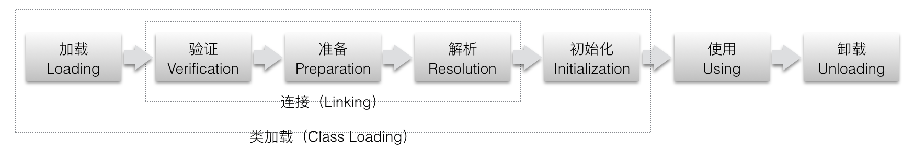
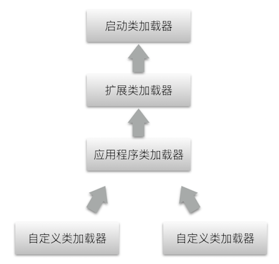

相信大家都听过一句话：“计算机只认识0和1”，因此我们写的程序要经过编译器翻译成0和1构成的二进制格式才能有计算机执行。而随着计算机的发展，特别是大量建立在虚拟机上的程序语言出现，将程序编译成二进制已经不是唯一的选择，越来越多的语言选择了与操作系统无关、平台中立的格式作为编译后的存储格式。
在1997年第一版Java虚拟机规范发布时就描述了：未来，我们会对Java虚拟机进行扩展，以便更好的支持其他语言在jvm上运行。如今，除了Java以外已经发展出了一大批可以在jvm上运行的语言，如Clojure、Groovy、JRuby、Jython、Scala等。而jvm实现语言无关性的基础就是虚拟机和字节码存储格式。Java虚拟机不与任何语言绑定，它只与“Class文件”这种特定的二进制文件格式有关。Class文件中包含了Java虚拟机指令集和符号表以及其他辅助信息。Java虚拟机不关系Class文件的来源，因此任何语言只要编译成符合Java虚拟机的规范的Class文件，都可以在jvm上运行。
Class文件格式
每一个Class文件都对应着唯一一个类或接口的定义信息，但反过来，类或接口并不一定都得定义在Class文件中，也可以通过类加载器直接生产。Class文件是一组以8位字节为基础单位的二进制流，各个数据项目严格的按照顺序紧凑排列，没有任何分隔符，使得文件几乎没有空隙存在。jvm规范规定，Class文件采用类似C语言结构体的伪结构体来存储数据，这种伪结构体中只有两种数据类型：无符号数和表。u1，u2，u4，u8分别代表一个字节，2个字节，4个字节和8个字节的无符号数。表由多个无符号数或其他表作为数据项构成，所有表都已_info结尾。
所有Class文件的头4个字节称为“魔数”——0xCAFEBABE（咖啡宝贝），紧接着的第5个和第6个字节是此版本号，第7个第8个字节是主版本号。高版本的jdk可以兼容以前版本的Class文件，但不能运行以后版本的。
紧接着主版本号之后的是常量池入口，常量池之后紧接着的两个字节是访问标志（access_flag），用于识别一些类或接口的访问信息，包括：这个Class是类还是接口（ACC_INTERFACE），是否定义为public（ACC_PUBLIC），是否定义为abstract（ACC_ABSTRACT），是否声明为final（ACC_FINAL），是否是一个注解（ACC_ANNOTATION）等。在访问标志之后的是类索引、父类索引和接口索引集合。再接着的是字段表集合，方法表集合，属性表集合。
Class加载
一个类在虚拟机中的生命周期包括以下7个阶段：加载（Loading）、验证（Verification）、准备（Preparation）、解析（Resolution）、初始化（Initialization）、使用（Using）、卸载（Unloading）。其中验证、准备、解析3个阶段统称为连接（Linking）。

注意：这些过程会按部就班的”开始“，但完成过程会相互穿插。
加载
加载过程主要完成3见识：
- 1、通过一个类的全限定名来获取定义此类的二进制字节流。
- 2、将这个字节流所代表的静态存储结构转化为方法区的运行时数据结构。
- 3、在内存中生成一个代表这个类的java.lang.Class对象，作为方法区这个类的各种数据的访问入口。
由于虚拟机规范中并没有规定二进制字节流一定要从Class文件中获取，因此虚拟机的实现中可以以各种方式来获取，比如运行时计算生成。这就是我们常用的动态代理技术的原理。
验证
验证阶段包括4个检验：文件格式验证，元数据验证，字节码验证，符号引用验证。
准备
准备阶段是正式为类变量分配内存，并设置类变量初始值的阶段。这些类变量使用的内存都将在方法区中进行分配。注意，这里说的初始值”通常情况“下是指数据类型的零值，而不是程序中赋予的初始值。如一个类变量定义为:
那么value在准备阶段过后，它的初始值是0，而不是100，等到下面的初始化过程时才会将value赋值为100。如果它被final修饰，那么编译时会变成一个常量，在准备阶段就赋值为100。
解析
解析阶段包括4个方面：类或接口的解析，字段解析，类方法解析，接口方法解析。
初始化
初始化是类加载阶段的最后一步，java虚拟机规范规定了有且只有以下5中情况必须立即对类进行”初始化“（加载、验证、准备需要在此之前开始）：
- 1、遇到new、getstatic、putstatic或invokestatic这4个字节码指令时，如果类没有进行过初始化，则需要先触发其初始化。生成这4条指令的常见java代码是：使用new关键字实例化对象、读取或者设置一个类的静态字段（除了被final修饰的，被final修饰的会在编译期把结果放入常量池）、以及调用一个类的静态方法。
- 2、使用java.lang.reflect包的方法对类进行反射调用的时候，如果类没有进行过初始化，则需要先触发其初始化。
- 3、当初始化一个类时，如果发现其父类还没有进行过初始化，则需要先触发其父类的初始化。
- 4、当虚拟机启动时，用户需要指定一个要执行的主类（main class），虚拟机会先初始化这个类。
- 5、当使用jdk1.7的动态语言支持时，如果一个java.lang.invoke.MethodHandle实例最后解析结果是REF_getStatic、REF_putStatic、REF_invokeStatic的方法句柄，且这个方法句柄所对应的类没有进行过初始化，则需要先触发其初始化。
只且只有这5中情况的类引用会触发初始化，称为主动引用。除此之外的所有类引用都不会触发初始化，称为被动引用。
类加载器
类加载器是Java语言的一项创新，他也是Java语言流行的重要原因之一，它已经成为Java技术体系中的一块重要基石。类加载器虽然只用于实现类的加载动作，但它在Java程序中起到的作用却远远不限于类加载阶段。对于任意一个类，都需要由加载它的类和这个类本身一同确立其在Java虚拟机中的唯一性。也就是说，要比较两个类是否”相等“，只有在两个类是同一个类加载器加载的提前下才有意义。这里的相等包括了：equals、isAssignableFrom、isInstance、instanceof等操作。
双亲委派模型
从Java虚拟机的角度，只有两种类加载器，一种是启动类加载器（Bootstrap ClassLoader），这是由C++实现的，是虚拟机的一部分，另一种就是其他类加载器，由java语言实现，独立于虚拟机外部，且全部都继承自java.lang.ClassLoader。
从Java开发人员的角度，可以分为：启动类加载器，扩展类加载器，应用程序类加载器，自定义类加载器。他们以双亲委派模型进行工作：

双亲委派模型的工作过程是：如果一个类加载器收到了类加载请求，它首先不会自己去尝试加载这个类，而是把这个请求委派给父类加载器去完成，每一个层次的类加载器都是如此，因此所有加载请求都应该传送到顶层的启动类加载器中，只有当父类加载器反馈自己无法完成加载请求（它的搜索范围内没有找到所需要的类）时，子加载器才会尝试自己去加载。双亲委派模型很好的解决了各个类加载器的基础类的统一问题（越基础的类由越上层的加载器进行加载），例如Object类，它被放在rt.jar中，因此无论哪个类加载器要加载这个类，最后都会委托给最顶端的启动类加载器进行加载，因此Object不管在任何类加载器环境中都是同一个类，相反如果没有使用双亲委派模型，那么Object可能变成很多不同的类，从而导致程序混乱。
双亲委派模型逆向，当基础类需要调用回用户的代码时，怎么办？比如JNDI、JDBC、JCE等服务，为此java设计团队引入了一个不太优雅的设计：线程上下文类加载器（Thread Context ClassLoader）。这个类加载器可以通过Thread.setContextClassLoader()进行设置，如果创建线程时还未设置，它将会从父线程中继承一个，如果应用程序的全局范围内都没有设置过的话，那这个类加载器默认就是应用程序类加载器。有了线程上下文类加载器以后，就可以实现父类加载器委托子类加载器去完成类加载的动作，也就是实现了双亲委派模型的逆向操作。
最后还有一种不符合双亲委派模型的类加载方式，为了实现代码热替换，模块热部署而产生的OSGi，它自定义了类加载实现机制。每个程序模块（OSGi中的Bundle）都有一个自己的类加载器，当需要更换一个Bundle时，就把Bundle连同它的类加载器一起换掉以实现代码的热替换。
Java方法调用
Class文件在编译过程中没有传统编译的连接步骤，因此一切方法的调用在Class文件中存储的都只是符号引用，而不是方法实际运行时内存布局中的入口地址。这个特性给Java带来了强大的动态扩展能力，但是也使得Java的方法调用变得复杂，需要在类加载期间，甚至到运行期间才能确定目标方法的直接引用。
所有方法调用中的目标方法在Class文件中都是一个常量池的符号引用，在类加载的解析阶段，会将其中一部分符号引用转换为直接引用。而这种转换的前提是：方法在程序真正运行之前就有一个可以确定的调用版本，并且这个方法的调用版本在运行期是不可变的。也就是说，调用目标在编译器进行编译的时候就已经确定下来。在Java语言中符合这个要求的方法，主要包括“静态方法”和“私有方法”两大类。与只对应的是，在Java虚拟机中提供了5条方法调用的字节码指令：
- invokestatic：调用静态方法
- invokespecial：调用实例构造方法，私有方法和父类方法
- invokevirtual：调用所有虚方法
- invokeinterface：调用接口方法，会在运行时在确定一个实现此接口的对象
- invokedynamic：先在运行时动态解析出调用点限定符所引用的方法，然后再执行该方法
只要能被invokestatic和invokespecial指令调用的方法，都是可以在解析阶段确定唯一的调用版本的方法，符合这个条件的有：静态方法、私有方法、实例构造器、父类方法四种。他们在类加载阶段就会把符号引用转换为直接引用。这些方法称为非虚方法，其他方法称为虚方法（final方法除外）。这种方法调用称为解析调用（Resolution）。
除了解析调用，还有一种分派调用（Dispatch），分派调用可以分为静态分派和动态分派两种。先来看一个静态分派的例子：
代码的运行结果是：
首先我们来明确两个重要的概念，在如下代码中：
Human称为变量的静态类型（Static Type），或者称为外观类型，后面的Man则称为变量的实际类型（Actual Type），静态类型是在编译器可知的，不会被改变。而实际类型变化的结果在运行期才可确定，编译器编译时并不知道一个对象的实际类型是什么。因此上面的代码中，编译器在编译器就根据变量的静态类型选择了sayHello(Human)作为调用目标，并把这个方法的符号引用写到main方法里的两条invokevirtual指令参数中。所有依赖静态类型来定位方法执行版本的分配就称为静态分派。静态分配的典型的应用就是重载（Overload）。
与静态分派对应的还有一种动态分配，它和多态的另一个重要体现——重写（Override）有着密切的关系。这里就不举例说明了，只说明其实现原理：invokevirtual指令的多态查找过程，invokevirtual指令的运行时解析过程步骤：
- 1、找到操作数栈顶的第一个元素所指向的对象实际类型，记为C
- 2、如果在类型C中找到与常理中描述符合简单名称都相符的方法，则进行访问权限校验，如果通过则返回该方法的直接引用，结束调用；如果不通过则返回java.lang.IllegalAccessError异常。
- 3、否则，按照继承关系从下往上一次对C的各个父类进行第2步操作。
- 4、如果始终没有找到合适的方法，则抛出java.lang.AbstractMethodError异常。
invokevirtual指令执行的第一步就是在运行期确定接受者的实际类型，这个过程就是java语言中方法重写的本质。我们把这种在运行期间根据实际类型确定方法执行版本的分派过程称为动态分派。